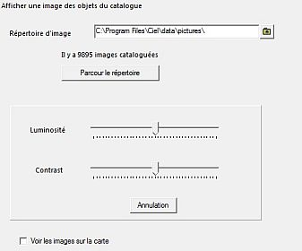
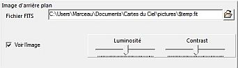
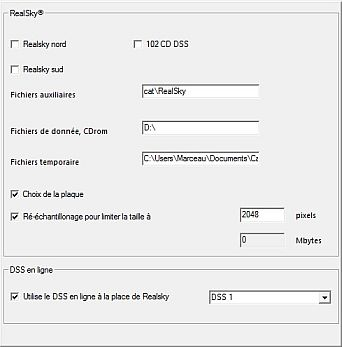

Il ya deux endroits où sont gérées les images fit :

D'abord vous devez balayer le répertoire des images du catalogue SAC pour charger leurs caractéristiques dans la base de données de CdC.
Un chemin différent peut être spécifié dans la zone d'entrée (aidez vous avec l'icône répertoire).
Quand le balayage est fini, un message est affiché : Il y a xxxx images cataloguées (9894 dans la V3 beta 0.1.4).
Vous pouvez régler la luminosité et le contraste des images et vous devez cocher la case “Voir le images sur la carte” en bas de la fenêtre.

Ici vous pouvez spécifier l'affichage d'une image particulière (par exemple celle sur laquelle la carte est centrée) en entrant son nom de fichier (contenu dans le répertoire vos_documents\Carte_du_ciel\pictures par défaut).
Vous pouvez régler la luminosité et le contraste des images et vous devez cocher la case “Voir l'image” en bas de la fenêtre.

Ici vous pouvez préciser l'endroit où est implanté RealSky dans votre PC.
Vous devez spécifier le jeu de CD utilisé, où sont les fichiers auxiliaires, le nom de votre lecteur de CD et où peuvent être stockés les fichiers temporaires.
Vous pouvez demander à pouvoir choisir dans une liste de plaques et limiter la taille des images.
Si vous êtes connecté à Internet, vous pouvez télécharger les images DSS. Vous spécifiez ici le jeu d'images DSS que vous désirez.
{kind=link}
{kind=link}
{kind=link}